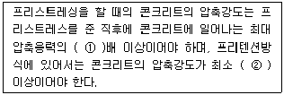
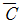
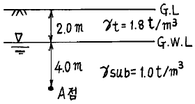
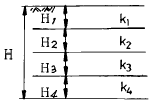
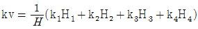
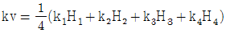
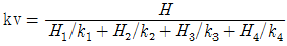
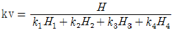
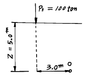

건설재료시험기사 (2003-05-25 기출문제)
1과목: 콘크리트공학
1. 콘크리트에서 염화물 함유량에 대한 기준으로 옳은 것은?
- 철근 콘크리트에서는 염분량이 0.01% 이하이어야 한다.
- 프리스트레스트 콘크리트에서의 염분량은 0.1% 이하이어야 한다.
- 해사에 포함되는 염분량은 0.03% 이하이어야 한다.
- 비빌 때 콘크리트 중의 전 염화물 이온량은 0.3kg/m3 이하이어야 한다.
(정답률: 알수없음)

2. 다음 중 시방배합을 현장배합으로 수정할 경우에 고려할 사항은?
- 골재의 입도와 표면수
- 구조물의 형상과 치수
- 골재의 형상과 염분함유량
- 콘크리트의 내구성과 수밀성
(정답률: 알수없음)
3. 콘크리트의 배합설계시 제반요소의 결정방법에 관하여 기술한 것중 틀린 것은?
- 콘크리트 품질의 균질성은 공기량이 증가할수록 양호하다.
- 잔골재율이 너무 작으면 재료분리가 일어날 가능성이 크다.
- 부순모래를 사용할 경우 강모래를 사용할 경우에 비하여 단위수량이 증가하는 경향이 있다.
- 경제적인 관점에서는 가능한한 굵은골재를 사용하는 것이 일반적으로 유리하다.
(정답률: 알수없음)
4. ( )속에 알맞은 것은?

- 1.5, 250 kg/cm2
- 1.7, 250 kg/cm2
- 1.5, 300 kg/cm2
- 1.7, 300 kg/cm2
(정답률: 알수없음)
5. 다음 중 혼합시멘트가 아닌 것은?
- AE시멘트
- 고로슬래그시멘트
- 실리카시멘트
- 플라이애쉬시멘트
(정답률: 알수없음)
6. 콘크리트의 품질검사에 대한 설명 중 옳지 않은 것은?
- 압축강도로부터 물-시멘트비를 정한 경우, 이 검사는 보통 재령 28일의 압축강도에 의하여 실시한다.
- 압축강도로부터 물-시멘트비를 정한 경우, 시험하기 위한 시료를 채취하는 시기와 횟수는 하루에 치는 콘크리트마다 적어도 1회로 한다.
- 내동해성, 화학적 내구성, 수밀성 등으로부터 물-시멘트비를 정할 경우, 시험값의 평균값이 소요의 물-시멘트비보다 크면 그 콘크리트는 소요의 품질을 가졌다고 생각해도 좋다.
- 내동해성, 화학적 내구성, 수밀성 등으로부터 물-시멘트비를 정할 경우, 시험값의 평균값이 소요의 압축강도를 웃돌고 있다면 그 콘크리트는 소요의 품질을 가졌다고 생각해도 좋다.
(정답률: 알수없음)
7. 서중콘크리트 시공시 재료에 대한 설명중 옳지 않은 것은?
- 고온의 시멘트를 사용 해서는 안된다.
- 저온의 물을 사용하는 것이 효과적이다.
- 지연형의 감수제를 사용해서는 안된다.
- 장시간 뙤약볕에 방치했던 골재를 그대로 사용해서는 안된다.
(정답률: 알수없음)
8. 콘크리트의 품질관리에 관한 설명 중 맞지 않는 것은?
- 시험값에 의하여 콘크리트의 품질을 관리할 경우에는 관리도 및 히스토그램을 사용하는 것이 좋다.
- 압축강도에 의한 콘크리트 관리는 일반적으로 28일 압축강도에 의해 콘크리트를 관리한다.
- 물-시멘트비의 1회 시험값은 동일배치에서 취한 2개 시료의 물-시멘트비의 평균값으로 한다.
- 압축강도의 1회 시험값은 동일배치에서 취한 3개 시료의 압축강도의 평균값으로 한다.
(정답률: 알수없음)
9. 워커빌리티를 향상시키기 위해 사용하는 다음 방법 중 좋은 방법이 아닌 것은?
- 시멘트의 분말도를 높인다.
- 플라이애시, 고로슬래그 등 무기혼화재를 혼용한다.
- 단위수량을 늘린다.
- 입형이 둥근 골재를 사용한다.
(정답률: 알수없음)
10. 콘크리트의 건조수축에 영향을 미치는 주요 인자가 아닌것은?
- 시멘트의 분말도
- 골재의 최대치수
- 배합방법
- 부재의 크기
(정답률: 알수없음)
11. 수중콘크리트의 배합에 대해 맞지 않는 것은?
- 콘크리트 펌프 사용시 슬럼프의 범위는 15∼20㎝이다.
- 밑열림상자 및 포대 사용시 슬럼프의 범위는 12∼17㎝ 이다.
- 물-시멘트비는 50% 이하를 표준으로 한다.
- 단위시멘트량은 400㎏/m3 이상을 표준으로 한다.
(정답률: 알수없음)
12. 굵은골재의 최대치수, 잔골재율, 잔골재의 입도, 반죽질기 등에 의한 마무리하기 쉬운 정도를 나타내는 굳지 않은 콘크리트의 성질을 무엇이라고 하는가?
- workability
- consistency
- sand percentage
- finishability
(정답률: 알수없음)
13. 콘크리트의 비비기에서 강제식 믹서일 경우 믹서 안에 재료를 투입한 후 비비는 시간의 표준은?
- 30초 이상
- 1분 이상
- 1분 30초 이상
- 2분 이상
(정답률: 알수없음)
14. 콘크리트의 역학적 특성에 관한 설명으로 잘못된 것은?
- 콘크리트의 강도가 클수록 탄성계수도 커진다.
- 저강도의 콘크리트는 파괴가 서서히 일어난다.
- 경량콘크리트의 경우 탄성계수가 일반 콘크리트 보다 작다.
- 콘크리트의 최대응력에서 변형도는 약 0.03% 정도이다.
(정답률: 알수없음)
15. 콘크리트를 친 후 습윤양생을 하는 경우 습윤상태의 보호기간은 조강포틀랜드 시멘트를 사용한 때 얼마 이상을 표준으로 하나?
- 1 일
- 3 일
- 5 일
- 7 일
(정답률: 알수없음)
16. 프리스트레스트 콘크리트(PSC)에서 굵은골재의 최대치수는 일반적인 경우 얼마를 표준으로 하나?
- 15 mm
- 25 mm
- 40 mm
- 50 mm
(정답률: 알수없음)
17. 공장제품 콘크리트의 제조 및 시공에 관한 설명 중 틀린것은?
- 일반적인 공장제품 콘크리트는 재령 14일에서의 압축강도 시험값을 기준으로 한다.
- 공장제품 콘크리트는 기계적 다짐으로 성형하므로 단위수량은 크고, 슬럼프가 큰 묽은반죽 콘크리트가 사용된다.
- 즉시 탈형을 하더라도 해로운 영향을 받지 않는 공장 제품에 대해서는 콘크리트가 경화되기 전에 거푸집의 일부 또는 전부를 해체해도 좋다.
- 굵은골재 최대치수는 40㎜ 이하이고 공장제품 최소두께의 2/5이하이며, 강재의 최소순간격의 4/5를 넘어서는 안된다.
(정답률: 알수없음)
18. AE제(air entraining admixture)가 콘크리트의 성질에 미치는 영향 중 틀린 것은?
- 동일한 워커빌리티를 얻기 위한 단위수량이 감소되어 일반적으로 블리딩도 감소된다.
- 염화칼슘 등이 주로 사용되며, 황산염에 대한 화학저항성이 크다.
- AE제에 의한 연행공기는 볼베어링과 같은 역할을 하여 워커빌리티를 개선한다.
- 물의 동결에 의한 팽창응력을 기포가 흡수함으로써 동결융해에 대한 저항성이 커진다.
(정답률: 알수없음)
19. 콘크리트 표준시방서에 의한 콘크리트의 배합설계시 물-시멘트비는 무엇을 고려하여 정하는가?
- 강도, 내구성, 수밀성
- 슬럼프, 반죽질기, 작업성
- 타설온도, 타설높이, 타설속도
- 구조물의 치수, 철근간격, 최대골재크기
(정답률: 알수없음)
20. 조립률이 2.70인 굵은 골재 1kg과 조립률이 2.40인 잔골재 500kg을 혼합한 골재의 조립률은 얼마인가?(오류 신고가 접수된 문제입니다. 반드시 정답과 해설을 확인하시기 바랍니다.)
- 2.40
- 2.50
- 2.60
- 2.70
(정답률: 30%)
2과목: 건설시공 및 관리
21. 암석발파공법에서 1차발파 후에 발파된 원석의 2차발파공법으로 주로 사용되는 것이 아닌 공법은?
- 프리스프리팅공법
- 블록보링공법
- 스네이크보링공법
- 머드캐핑공법
(정답률: 알수없음)
22. 다음 중 비계를 이용하지 않는 강트러스교의 가설공법이 아닌 것은?
- 새들(saddle)공법
- 캔틸레버(cantilever)식 공법
- 케이블(cable)식 공법
- 부선(pontoon)식 공법
(정답률: 알수없음)
23. 굴착하려는 토량이 같은 흙을 운반하려고 할때 운반토량이 가장 많아지는 것은 다음 중에서 어느 것인가?
- 모래
- 사질토
- 조약돌 모래
- 경암
(정답률: 알수없음)
24. 직접기초 굴착시 저면 중앙부에 섬과 같이 기초부를 먼저 구축하여 이것을 발판으로 주면부를 시공하는 방법을 무엇이라고 하는가?
- Open cut 공법
- Island 공법
- cut 공법
- Deep well 공법
(정답률: 알수없음)
25. 다음 중에서 포장 두께를 결정하기 위한 시험이 아닌 것은?
- CBR시험
- 평판재하시험
- 마샬시험
- 1축압축시험
(정답률: 0%)
26. 표준암의 천공속도가 40cm/min 인 착암기를 사용하여 풍화된 화강암을 천공하고자 한다. 천공장을 4m라고 할 때, 1 시간당 몇 공을 천공할 수 있겠는가? (단, α = 0.65, C1 = 1.0, C2 = 0.6)
- 1공
- 2공
- 3공
- 4공
(정답률: 알수없음)
27. 다음은 PERT/CPM 공정관리 기법의 공기 단축 요령에 관한 설명이다. 옳지 않은 것은?
- 최소 비용 기울기를 갖는 공정부터 공기를 단축한다.
- 크리티칼 패스 선상의 공정을 우선 단축한다.
- 전체의 모든 활동이 주공정선화(C.P)되면 공기 단축은 절대 불가능하다.
- 공기 단축에 따라 주공정선(C.P)이 복수화 된다.
(정답률: 알수없음)
28. 암거의 배열방식중 인접한 높은지대 또는 배수지구를 둘러싼 높은 지대에서의 침투수를 차단할 수 있는 위치에 암거를 설치하는 방법으로 이에 의하여 배수지구내에 침투수가 나타나는 것을 방지하는 방법은?
- 빗식
- 차단식
- 어골식
- 자연식
(정답률: 알수없음)
29. 말뚝의 지지력을 결정하기 위한 방법 중에서 가장 정확한 것은?
- 말뚝의 재하시험
- 정역학적 공식
- 동역학적 공식
- 허용지지력표
(정답률: 알수없음)
30. 1개마다 양.불량으로 구별할 경우 사용하나 불량률을 계산하지 않고 불량개수에 의해서 관리하는 경우에 사용하는 관리도는?
- U관리도
- C관리도
- P관리도
- Pn관리도
(정답률: 알수없음)
31. 모우터 그레이더(motor grader) 규격의 일반적인 표현 방법은 무엇인가?
- 총장비의 중량(ton)
- Blade의 길이(m)
- 버킷용량(m3)
- 보울의 용량(m3)
(정답률: 알수없음)
32. C = 0.9, L = 1.25이라 한다. 성토 10,000m3을 만들 계획이 있다. 토취장(土取場)의 토질을 사질토(砂質土)라 할때 굴착해서 운반하는 토량은 얼마나 되는가?
- 13,889m3
- 15,667m3
- 12,500m3
- 14,543m3
(정답률: 알수없음)
33. 다음 기계 중 준설과 매립을 동시에 할 수 있는 준설선은?
- Dipper dredger
- Bucket dredger
- Grab bucket dredger
- Pump dredger
(정답률: 알수없음)
34. 폭우시 옹벽 배면에 배수시설이 취약하면 옹벽저면을 통하여 침투수의 수위가 올라 간다. 이 침투수가 옹벽에 미치는 영향을 설명한 것 중 옳지 않은 것은?
- 활동면에서의 간극수압 증가
- 부분포화에 따른 뒷채움 흙무게의 증가
- 옹벽 바닥면에서의 양압력 증가
- 수평저항력의 증가
(정답률: 알수없음)
35. 아스팔트 포장에서 과도한 아스팔트의 사용 또는 혼합물의 부적절한 공극으로 인해 아스팔트표층으로 아스팔트가 올라와 표면에 아스팔트 막을 형성하는 현상은 무엇인가?
- 소성변형
- 라벨링
- 블리딩
- 함몰
(정답률: 알수없음)
36. 연약 점토지반에 시트 파일을 박고 내부를 굴착하였을때 외부의 흙중량에 의하여 굴착저변이 부풀어 오르는 현상은?
- 보일링(Boiling)
- 슬라이딩(Sliding)
- 신킹(Sinking)
- 히빙(Heaving)
(정답률: 알수없음)
37. 우물통의 침하공법 중 초기에는 자중으로 침하되지만 심도가 깊어짐에 따라 레일철괴, 콘크리트블록, 흙가마니등이 사용되는 공법은 무엇인가?
- 발파에 의한 침하 공법
- 물하중식 침하 공법
- 재하중에 의한 공법
- 분기식 침하공법
(정답률: 알수없음)
38. Rock fill Dam과 같이 댐 정상부를 월류시킬 수 없을 때 설치하며,이 여수토의 월류부는 난류를 막기 위하여 굳은 암반상에 일직선으로 설치하고 월류수맥의 난잡이나 공기 연행을 일으키기 쉬우므로 바닥바름을 잘해야 하는 여수토는?
- 사이펀 여수토
- 그로울리홀 여수토
- 측수로 여수토
- 슈트식 여수토
(정답률: 알수없음)
39. 제방이나 흙댐의 시공에 있어서 성토다짐할 경우 함수비(含水比)가 높은 흙이라면 함수비 조절을 위하여 어떤 로울러(roller)를 사용하면 가장 효과적이겠는가?
- 탬핑 로울러(Tamping roller)
- 마카담 로울러(macadam roller)
- 탠덤 로울러(tandem roller)
- 타이어 로울러(Tire roller)
(정답률: 알수없음)
40. 수직굴착후 그 속에 현장 콘크리트를 타설하여 만든 원형 기초인 피어기초의 시공에 대한 설명으로 틀린 것은?
- 굴착한 벽이 무너지지 않는, 굳기가 중간정도의 점토 지반의 굴착에 이용되는 공법으로 깊이가 약 1.2∼1.8m의 원통구멍을 인력으로 굴착한 후 반원형의 강철링을 조립하여 유지한후 굴착하는 방법을 시카고공법이라한다.
- 케이싱 튜브를 사용하지않고 회전식 버킷을 사용하는 어스드릴공법에서는 굴착후 철근삽입시 철근이 따라 뽑히는 공상현상이 일어난다.
- 정수압으로 구멍의 벽을 유지하면서 물의 순환을 이용하여 드릴파이프의 끝에 설치한 특수한 비트의 회전에 의해서 굴착한 토사를 물과 함께 배출하고 소정의 깊이까지 굴착하는 공법을 RCD공법(Reverse circulation)이라한다.
- 굴착내부의 흙막이로서 강재원통을 사용하는 것으로 연약한 점토에 적당하며, 1.8∼5.0m의 강재 원통을 땅속에 박고 내부의 흙을 인력으로 굴착한 후, 다시 다음의 원통을 박는 공법을 Gow공법이라 한다.
(정답률: 알수없음)
3과목: 건설재료 및 시험
41. 제 3과목: 건설재료 및 시험 목재의 건조에 관한 다음 설명 중 옳지 않은 것은?
- 건조하면 비틀림을 방지하는 효과가 있다.
- 건조하면 강도는 증가한다.
- 수침법은 공기건조의 시간이 길어지는 결점이 있다.
- 건조하면 도료 주입제의 효과를 증대 시킬 수 있다.
(정답률: 알수없음)
42. 석유 아스팔트에 휘발성 석유 물질을 첨가하여 유동성을 증가시킨 아스팔트는?
- 유화 아스팔트
- 아스팔타이트
- 컷백(cut-back) 아스팔트
- 타르
(정답률: 알수없음)
43. 폭파약 취급상의 주의할 점 중에서 틀린 것은 어느 것인가?
- 운반중 화기 및 충격에 대해서 세심한 주의를 한다.
- 뇌관과 폭약은 동일장소에 두어서 사용에 편리하게 한다.
- 장기보존에 의한 흡습, 동결에 대하여 주의를 한다.
- 다이나마이트는 일광의 직사와 화기있는 곳을 피한다
(정답률: 알수없음)
44. 콘크리트용 골재에 사용되는 하천골재 및 육상골재 중의 미립분이 콘크리트의 품질에 미치는 영향에 대한 설명 중 틀린 것은?
- 골재 중의 미립분이 증가하면 콘크리트의 단위수량이 증가한다.
- 골재 중의 미립분이 증가하면 콘크리트의 레이턴스가 감소한다.
- 골재 중의 미립분이 증가하면 콘크리트의 블리딩이 감소한다.
- 골재 중의 미립분이 증가하면 콘크리트의 건조수축이 증가한다.
(정답률: 알수없음)
45. 건설공사 품질시험기준에서 콘크리트 공사의 콘크리트 골재의 비중 및 흡수율 시험은 몇 m3마다 실시하는가?
- 1,000 m3
- 2,000 m3
- 3,000 m3
- 4,000 m3
(정답률: 알수없음)
46. 다음 중 함유비율이 가장 많고 시멘트의 수화반응에 가장 큰 영향을 미치는 시멘트 조성광물은?
- 알민산3석회(3CaO· Al2O3)
- 규산3석회(3CaO· SiO2)
- 규산2석회(2CaO· SiO2)
- 알민산철4석회(4CaO· Al2O3· Fe2O3)
(정답률: 알수없음)
47. 어떤 재료의 포아슨 비가 1/3이고,탄성계수는 2,040,000kgf/㎝2일때 전단 탄성계수는?
- 256,000kgf/㎝2
- 765,000kgf/㎝2
- 5,440,000kgf/㎝2
- 2,295,000kgf/㎝2
(정답률: 알수없음)
48. 다음 중 유동성을 증가시키는 혼화재료가 아닌 것은?
- 감수제
- 촉진제
- AE제
- 플라이 애쉬
(정답률: 알수없음)
49. 역청재료의 점도를 측정하는 시험방법이 아닌 것은?
- 앵글러법
- 세이볼트법
- 환구법
- 스토머법
(정답률: 알수없음)
50. 다음 중 시멘트의 비중에 대한 설명 중 틀린 것은?
- 혼합시멘트는 포틀랜드시멘트 보다 비중이 작다.
- 시멘트의 저장기간이 길면 대기중의 수분이나 탄산가스를 흡수하여 비중이 감소하며 강열감량이 감소한다.
- 시멘트 비중시험은 르샤틀리에 비중병으로 측정한다.
- 시멘트의 비중은 콘크리트의 중량배합의 계산에 있어서 시멘트가 차지하는 부피를 계산하는데 필요하다.
(정답률: 37%)
51. 콘크리트용 혼화재로 실리카흄(Silica fume)을 사용한 경우 효과에 대한 설명으로 잘못된 것은?
- 콘크리트의 재료분리 저항성, 수밀성이 향상된다.
- 알칼리 골재반응의 억제효과가 있다.
- 내화학약품성이 향상된다.
- 단위수량과 건조수축이 감소된다.
(정답률: 알수없음)
52. 콘크리트 압축강도 시험(KSF 24⑤)에서 지름이 15cm인 공시체가 45,000kgf에서 파괴되었다. 이때의 콘크리트 압축강도는 얼마인가?
- 약 255 kgf/cm2
- 약 300 kgf/cm2
- 약 350 kgf/cm2
- 약 400 kgf/cm2
(정답률: 알수없음)
53. 표면건조 포화상태의 골재시료 1780g을 공기중에서 건조 시켰더니 1731g이 되었고, 이를 다시 노건조시켰더니 1709g이 되었다. 이 골재시료의 흡수율은?
- 1.3%
- 2.8%
- 3.9%
- 4.2%
(정답률: 알수없음)
54. 강을 700∼750℃ 정도 가열했다가 급냉시키면 조직이 조대해져 경도는 증대하나 취약해지는데 이러한 열처리 과정을 무엇이라 하는가?
- 불림
- 담금질
- 뜨임질
- 단련
(정답률: 알수없음)
55. 고무혼입 아스팔트(rubberized asphalt)를 스트레이트 아스팔트와 비교할 때 잇점 중 옳지 않은 것은?
- 응집성 및 부착성이 크다.
- 내노화성이 크다.
- 마찰계수가 크다.
- 감온성이 크다.
(정답률: 알수없음)
56. 역청재료의 일반적 성질에 관한 설명중 틀린 것은?
- 역청재료는 유기질 재료가 가지지 못하는 무기질 재료 특유의 성질을 가지고 있어 포장재료,주입재료, 방수재료 및 이음재 등에 사용된다.
- 타르(tar)는 석유원유,석탄,수목등의 유기물의 건류에 의하여 얻어진 암흑색의 액상물질로서 아스팔트보다 수분이 많이 포함되어 있다.
- 역청유제는 역청을 미립자의 상태에서 수중에 분산시켜 혼탁액으로 만든 것이다.
- 코울타르(coal tar)는 석탄의 건류에 의하여 얻어지는 가스 또는 코우크스를 제조할 때 생기는 부산물이다.
(정답률: 알수없음)
57. 보통 포틀랜드 시멘트가 28일에 낼 수 있는 소요강도를 24시간만에 낼 수 있게 만든 시멘트는 무엇인가?
- 팽창시멘트
- 알루미나 시멘트
- 초속경 시멘트
- 조강 포틀랜드 시멘트
(정답률: 알수없음)
58. 역청재료의 인화점과 연소점에 관한 다음 설명 중 옳지 않은 것은?
- 역청재에 화기가 인화 되는 최저온도를 인화점이라 한다.
- 인화점은 연소점 보다 온도가 25~60℃ 정도 낮다.
- 역청재의 가열시에 위험도를 알기 위해 인화점과 연소점을 측정한다.
- 역청재가 인화되어 연소할 때의 최고 온도를 연소점이라 한다.
(정답률: 알수없음)
59. 아스팔트 콘크리트의 마샬 안정도 시험시 공시체의 적정 온도(℃)는?
- 40
- 50
- 60
- 70
(정답률: 알수없음)
60. 콘크리트용 혼화제 중 하나인 기포제 및 발포제에 대한 다음 설명 중 적당하지 않은 것은?
- 콘크리트의 단위용적 중량을 경감하고, 단열성 및 내화성 등의 성질을 개선할 목적으로 사용되는 혼화제이다.
- 기포제는 AE제와 동일한 계면활성작용으로 기포를 도입하는 혼화제로 최대 85%까지 공기량을 얻을 수있다.
- 발포제를 PC용 그라우트에 사용하면 발포작용에 의해 모르터나 시멘트풀을 팽창시켜 부착이 떨어진다.
- 발포제는 금속알루미늄 분말과 시멘트 중의 알칼리와 반응하여 생성되는 수소가스를 이용한다.
(정답률: 알수없음)
4과목: 토질 및 기초
61. 일축압축시험 결과 흙의 내부 마찰각이 30°로 계산되었다. 파괴면과 수평선이 이루는 각도는?
- 10°
- 20°
- 40°
- 60°
(정답률: 알수없음)
62. 다음 흙의 다짐에 관한 것 중 틀린 것은?
- 인공적으로 흙에 압력이나 충격을 가하여 밀도를 높이는 것을 다짐이라 한다.
- 최대건조밀도때의 함수비를 최적함수비라 한다.
- 영공기공극 곡선은 흙이 완전포화될때 함수비-밀도 곡선을 말한다.
- 다짐에너지를 증가하면 최적함수비는 증가한다.
(정답률: 알수없음)
63. 연약 점토지반의 개량공법으로서 다음 중 적절하지 않은 것은?
- 샌드 드레인 공법
- 페이퍼 드레인 공법
- 프리로딩(Preloading)공법
- 바이브로 플로테이션(Vibrofloatation) 공법
(정답률: 알수없음)
64. 아래 그림에서 Ａ점 흙의 강도정수가

= 3.0t/m2, ø=30°일때 Ａ점의 전단강도는?
- 6.93t/m2
- 7.39t/m2
- 9.93t/m2
- 10.39t/m2
(정답률: 알수없음)
65. 그림과 같은 성층토(成層土)의 연직방향의 평균투수계수kv의 계산식으로서 알맞는 것은? (단, H1, H2, H3 … : 각토층의 두께, k1, k2, k3 … : 각토층의 투수계수)





(정답률: 알수없음)
66. 지표면이 수평이고 옹벽의 뒷면과 흙과의 마찰각이 0° 인 연직옹벽에서 Coulomb 토압과 Rankine 토압은 어떤 관계가 있는가? (단, 점착력은 무시한다.)
- Coulomb 토압은 항상 Rankine 토압보다 크다.
- Coulomb 토압과 Rankine 토압은 같다.
- Coulomb 토압이 Rankine 토압보다 작다.
- 옹벽의 형상과 흙의 상태에 따라 클때도 있고 작을때도 있다.
(정답률: 알수없음)
67. 도로의 평판재하 시험이 끝나는 다음 조건 중 옳지 않은 것은?
- 완전히 침하가 멈출 때
- 침하량이 15㎜에 달할 때
- 하중 강도가 그 지반의 항복점을 넘을 때
- 하중 강도가 현장에서 예상되는 최대 접지 압력을 초과할 때
(정답률: 알수없음)
68. 토질시험결과 No.200체 통과율이 50%, 액성한계가 45%, 소성한계가 25%일 때 군지수는?
- 3
- 5
- 7
- 9
(정답률: 알수없음)
69. Sand drain공법의 지배 영역에 관한 Barron의 정사각형 배치에서 사주(Sand pile)의 간격을 d, 유효원의 지름을 de라 할때 de를 구하는 식으로 옳은 것은?
- de = 1.13d
- de = 1.⑤d
- de = 1.03d
- de = 1.50d
(정답률: 알수없음)
70. 굳은 점토지반에 앵커를 그라우팅하여 고정시켰다. 고정부의 길이가 5m, 직경 20cm, 시추공의 직경은 10cm 이었다. 점토의 비배수전단강도 Cu = 1.0 kg/cm2, ø = 0°이라고 할 때 앵커의 극한 지지력은? (단, 표면마찰계수는 0.6으로 가정한다.)
- 9.4ton
- 15.7ton
- 18.8ton
- 31.3ton
(정답률: 알수없음)
71. 그림과 같이 지표면에 P1 = 100ton의 집중하중이 작용할때 지중 o점의 집중하중에 의한 수직응력은 얼마인가? (단, 영향값 Iσ = 0.2214)

- σz = 0.10t/m2
- σz = 0.20t/m2
- σz = 0.89t/m2
- σz = 2.00t/m2
(정답률: 알수없음)
72. 어느 지반에 30㎝×30㎝ 재하판을 이용하여 평판재하시험을 한 결과, 항복하중이 5t, 극한하중이 9t이었다. 이 지반의 허용지지력은 다음 중 어느 것인가?
- 55.6 t/m2
- 27.8 t/m2
- 100 t/m2
- 33.3 t/m2
(정답률: 알수없음)
73. 포화된 점토가 공극비 e = 0.80, 비중 Gs = 2.60일때 건조단위중량과 포화단위중량은 각각 얼마인가?
- γd = 1.988g/㎝3, γsat = 2.018g/㎝3
- γd = 1.866g/㎝3, γsat = 1.956g/㎝3
- γd = 1.444g/㎝3, γsat = 1.889g/㎝3
- γd = 1.333g/㎝3, γsat = 1.666g/㎝3
(정답률: 알수없음)
74. 공극비가 e1 = 0.80인 어떤 모래의 투수계수가 k1 = 8.5×10-2㎝/sec일때 이 모래를 다져서 공극비를 e2 = 0.57로 하면 투수계수 k2는?
- 8.5 × 10-3㎝/sec
- 3.5 × 10-2㎝/sec
- 8.1 × 10-2㎝/sec
- 4.1 × 10-1㎝/sec
(정답률: 알수없음)
75. 성토된 하중에 의해 서서히 압밀이 되고 파괴도 완만하게 일어나 간극수압이 발생되지 않거나 측정이 곤란한 경우 실시하는 시험은?
- 압밀 배수 전단시험(CD 시험)
- 비압밀 비배수 전단시험(UU 시험)
- 압밀 비배수 전단시험(CU 시험)
- 급속 전단시험
(정답률: 알수없음)
76. 최대주응력이 10t/m2, 최소주응력이 4t/m2일 때 최소주응력 면과 45° 를 이루는 평면에 일어나는 수직응력은?
- 7t/m2
- 3t/m2
- 6t/m2
- 4√2 t/m2
(정답률: 알수없음)
77. 간극률이 50%, 함수비가 40%인 포화토에 있어서 지반의 분사현상에 대한 안전율이 3.5라고 할 때 이 지반에 허용되는 최대 동수구배는?
- 0.21
- 0.51
- 0.61
- 1.00
(정답률: 알수없음)
78. 두께 2㎝의 점토시료에 대한 압밀시험에서 전압밀에 소요되는 시간이 2시간이었다. 같은 시료조건에서 5m 두께의 지층이 전압밀에 소요되는 기간은 약 몇 년인가? (단, 기간은 소수 2자리에서 반올림함.)
- 9.3년
- 14.3년
- 12.3년
- 16.3년
(정답률: 알수없음)
79. 두께 5m의 흐트러진 점토층이 있다. 이 점토층의 액성 한계가 65%이고 압밀하중을 2kg에서 5kg으로 증가시키려고 한다. 예상압밀 침하량은? (단, e=2.0)
- 0.20 m
- 0.26 m
- 0.29 m
- 0.32 m
(정답률: 알수없음)
80. 사면의 안정문제는 보통 사면의 단위 길이를 취하여 2차원 해석을 한다. 이렇게 하는 가장 중요한 이유는?
- 길이 방향의 변형도(Strain)를 무시할수 있다고 보기 때문이다.
- 흙의 특성이 등방성(isotropic)이라고 보기 때문이다
- 길이 방향의 응력도(Stress)를 무시할수 있다고 보기 때문이다.
- 실제 파괴형태가 이와 같기 때문이다.
(정답률: 알수없음)